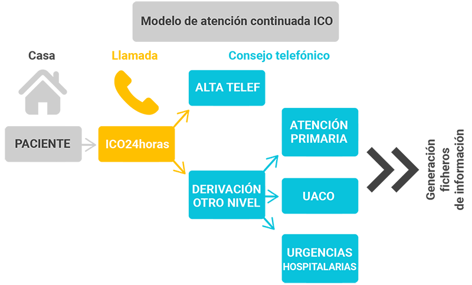

ICO 24h
MÓDULO 1 : Introducción a la atención telefónica urgente en el paciente onco-hematológico
En nuestros centros, cuando se realiza la acogida del paciente le indicamos que si tiene un problema urgente no se desplace a ningún sitio sin antes contactar con la central de llamadas urgentes ICO 24h.
Objetivos de ICO 24h :
- 1 Garantizar la continuidad asistencial en el proceso onco-hematologico de pacientes en seguimiento ICO, facilitando la accesibilidad 24 horas al día todos los días del año.
- 2 Detectar situaciones de riesgo para el paciente y activar el recurso más adecuado.
- 3 Contribuir a la sostenibilidad del modelo sanitario disminuyendo la frecuentación innecesaria de los servicios de urgencias hospitalarios.
Desde la central de llamadas se realiza el triaje telefónico y se complementa con la coordinación con las unidades de atención continuada oncológica (UACO) de los diferentes centros: ICO Badalona, ICO CSI, ICO Girona, ICO l’Hospitalet e ICO Tarragona. ICO 24h tiene como objetivo atender la demanda de atención urgente que generan los pacientes en seguimiento en alguno de los centros ICO.
Las UACO facilitan atención médica urgente en horario diurno y se complementan con los servicios de urgencias hospitalarios donde se atienden los pacientes que necesitan ser valorados por otros especialistas o cuando la demanda de atención supera la capacidad de atención en UACO.
Para un óptimo funcionamiento, es imprescindible que cuando se genere un caso candidato a ser atendido en UACO, desde ICO 24h siempre se contacte previamente con el centro de referencia para consensuar la indicación y confirmar la opción de visita en el tiempo deseado. Toda la actividad generada en la atención telefónica urgente debe de quedar registrada con los medios habituales de seguridad y que además permitan un análisis de seguimiento. El seguimiento de toda esta actividad desde las UACOS permite completar el proceso asistencial urgente independientemente del nivel de gravedad de la consulta, ya que se puede seguir también los casos que no han requerido una intervención asistencial urgente.
